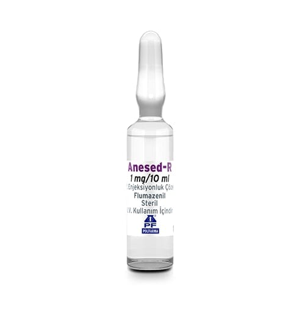

Anesed-R 1 mg/10 ml IV Enjeksiyonluk Çözelti, 5 Adet

Ne için kullanılır
KT · Bölüm 1ANESED-R etkin madde olarak flumazenil içeren, bir enjeksiyon veya infüzyon çözeltisidir. Çözeltinin 1 mL’si 0,1 mg flumazenil ihtiva etmektedir. Her bir ampul, 10 mL çözelti içinde 1 mg flumazenil içerir. Her kutuda, Tip I, 10 mL renksiz cam ampul bulunmaktadır (5 adet).
Flumazenil, benzodiazepinlerin (yatıştırıcı, uyku getirici, kas gevşetici ve kaygı/korku giderici özelliklere sahip özel grup) merkezi sakinleştirici etkilerinin tamamen veya kısmen tersine çevrilmesi için bir karşıt etkili maddedir (antidot). Bu nedenle ANESED-R, belirli tanı testlerinden sonra sizi uyandırmak için anestezide veya sakinleştirici koşullarda tutuluyorsanız yoğun bakımda kullanılabilir. Ayrıca benzodiazepinlerle zehirlenme veya aşırı dozun teşhisi ve tedavisi için kullanılabilir. ANESED-R, çocuklarda (1 yaşından büyük) benzodiazepinlerle sakinleştirici koşullar altında tutulduktan sonra onları uyandırmak için de kullanılabilir.
2. ANESED-R’yi kullanmadan önce dikkat edilmesi gerekenler: ANESED-R’yi aşağıdaki durumlarda KULLANMAYINIZ Eğer, Flumazenil, veya ANESED-R’nin içerdiği yardımcı maddelerden herhangi birine alerjiniz var ise, Beyin basıncında artış (intrakraniyal basınç artışı) veya ciddi epileptik nöbet (status epileptikus) gibi hayatı tehdit edici durumların kontrolü için benzodiazepin alıyorsanız.
ANESED-R’yi aşağıdaki durumlarda DİKKATLİ KULLANINIZ Eğer, Epilepsiniz varsa ve uzun süre benzodiazepin kullandıysanız, flumazenil nöbetlere neden olabilir. Karaciğer problemleriniz varsa. Şu anda veya geçmişte ciddi bir kafa travması yaşadıysanız, flumazenil beyninizde basınç artışına neden olabilir. Kalp problemleriniz varsa. Ameliyat öncesinde endişeliyseniz, kaygı nöbeti geçirmişseniz veya uzun süreli kaygı durumunuz varsa. Panik atak geçmişiniz varsa, flumazenil yeni ataklara neden olabilir. Ameliyat sonrasında devam eden ağrı mevcutsa. Uzun süreli veya yüksek dozda benzodiazepin tedavisi aldıysanız. 1 mg’dan daha yüksek bir dozda hızlı flumazenil enjeksiyonu, yoksunluk semptomlarına neden olabilir. Alkol bağımlılığı veya başka bir maddenin kötüye kullanımı öykünüz varsa, daha yüksek benzodiazepin toleransı ve bağımlılığı riskiniz bulunmaktadır ve bu nedenle yoksunluk belirtileri riski daha yüksektir. Anestezistiniz dozunuzu dikkatlice ayarlayacaktır. Benzodiazepinler (yatıştırıcı, uyku getirici, kas gevşetici ve kaygı/korku giderici özelliklere sahip ilaçlar) ve antidepresanlar (depresyon tedavisinde kullanılan ilaçlar) ile 3 zehirlenme durumunda, bu antidepresanların neden olduğu, ancak benzodiazepin ile birlikte uygulamayla daha zor ortaya çıkan nöbet ve kalpte ritim bozuklukları gibi etkiler ANESED-R uygulaması ile şiddetlenebilir. ANESED-R sadece benzodiazepinlerin etkilerini tersine çevirir. Bilinç azaltılmasına veya sakinleştirici etkiye başka bir ajan neden oluyorsa, ANESED-R'nin, bunun etkisini yok etmesi olası değildir. ANESED-R, uyuklama halinin tersine çevrilmesi için verilmesine rağmen, flumazenil verildikten sonra 24 saate kadar uyuklama haline geri dönüş yaşayabilirsiniz. Bunun nedeni, benzodiazepinlerin yatıştırıcı etkilerinin flumazenilin uyandırıcı etkilerinden daha uzun sürmesidir. Bu nedenle, benzodiazepinin tüm olası etkileri geçene kadar mümkünse yoğun bakımda izlenmelisiniz. Özellikle invazif olan ve çok fazla ağrıya neden olan bir operasyon geçirdiyseniz, anestezistiniz sizi sakinleştirici altında tutabilir. ANESED-R, benzodiazepin bağımlılığını veya bunun semptomlarını tedavi etmek için önerilmez. ANESED-R, ameliyatın sonunda sizi uyandırmak için uygulanacaksa, kas gevşeticinin etkileri ortadan kalkana kadar beklenmelidir.
Çocuklar Daha önce midazolam ile sakinleştirilen çocuklar, ANESED-R uygulamasından sonra en az 2 saat boyunca yoğun bakım ünitelerinde yakından gözlemlenmelidir, çünkü tekrarlayan yatıştırıcı etki veya solunum zorluğu meydana gelebilir. Diğer benzodiazepinlerle sakinleştirilmesi durumunda, izleme beklenen süreye göre ayarlanmalıdır. Çocuklar ANESED-R sadece bilinçli sakinleştirici uygulamasından sonra almalıdır. Diğer endikasyonlar için yeterli veri yoktur. Aynı durum 1 yaşın altındaki çocuklar için de geçerlidir. Bu uyarılar, geçmişteki herhangi bir dönemde dahi olsa sizin için geçerliyse lütfen doktorunuza danışınız.
ANESED-R’nin yiyecek ve içecek ile kullanılması Yiyecek ve içecekler ile kullanımı üzerine veri bulunmamaktadır.
Hamilelik İlacı kullanmadan önce doktorunuza veya eczacınıza danışınız.
Eğer hamileyseniz, hamile olabileceğinizi düşünüyorsanız veya hamile kalmayı planlıyorsanız lütfen doktorunuza veya eczacınıza danışınız. Doktorunuz ilacı alıp almayacağınıza karar verecektir. İnsanlarda doğmamış fetüs için risk belirlenmemiştir, bu nedenle, hastaya yararı, doğmamış fetüse olan risklere (hayatı tehdit edici acil durumlar gibi) karşı açıkça ağır basmadıkça ANESED-R’nin hamilelik sırasında kullanılması önerilmez. Tedaviniz sırasında hamile olduğunuzu fark ederseniz hemen doktorunuza veya eczacınıza danışınız.
Emzirme İlacı kullanmadan önce lütfen doktorunuza veya eczacınıza danışınız.
ANESED-R anne sütüne geçip geçmediği bilinmemektedir. Bu nedenle ANESED-R verildikten sonraki 24 saat boyunca emzirmemeniz önerilir.
Araç ve makine kullanımı ANESED-R’nin etkisi benzodiazepinlerin etkisinden daha kısadır ve bu nedenle tekrar uykulu hissetmeniz mümkündür. ANESED-R uygulamasından sonra 24 saat boyunca araç veya makine kullanmayınız.
ANESED-R’nin içeriğinde bulunan bazı yardımcı maddeler hakkında önemli bilgiler Bu tıbbi ürün her ampulde 1 mmol (23 mg)’dan daha az sodyum ihtiva eder; yani aslında “sodyum içermez”.
Diğer ilaçlar ile birlikte kullanımı Reçetesiz alınan ilaçlar da dahil olmak üzere herhangi bir ilaç alıyorsanız, son zamanlarda aldınız ise veya alma ihtimaliniz var ise lütfen doktorunuza veya hemşirenize söyleyiniz.
Bu bilgi, anestezistinizin dozunuzu dikkatlice ayarlayabilmesi için gereklidir. Özellikle aşağıdaki ilaçlardan herhangi birini alıyorsanız lütfen doktorunuza veya hemşirenize söyleyiniz. Zopiklon ve triazolopiridazinler (uykusuzluk (insomnia) tedavisinde kullanılır) Benzodiazepinler (kaygı bozukluğu (anksiyete) tedavisinde kullanılır, ör. diazepam, midazolam) Amitriptilin, nortriptilin, klomipramin, mirtazapin, mianserin ve imipramin gibi trisiklik veya tetrasiklik antidepresanlar Yanlışlıkla aşırı doz durumunda ANESED-R kullanırken, eş zamanlı kullanılan diğer psikotropik tıbbi ürünlerin (özellikle imipramin gibi trisiklik antidepresanlar) toksik etkilerinin benzodiazepin etkisinin azalmasıyla artabileceği dikkate alınmalıdır.
Eğer reçeteli ya da reçetesiz herhangi bir ilacı şu anda kullanıyorsanız veya son zamanlarda kullandınız ise lütfen doktorunuza veya eczacınıza bunlar hakkında bilgi veriniz.